Chapter 8 – CCNA 2
01.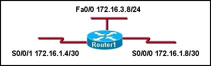 Refer to the exhibit. Router1 has been issued the ip classless command. What happens to packets destined to host 172.16.3.10?
- they are dropped;
- sent to default gateway;
- forward out interface Serial0/0/1;
- forward out interface FastEthernet 0/0;
02. A network is converged and the routing tables are complete. When a packet needs to be forwarded, what is the first criterion used to determine the best path in the routing table?
- the route with the highest bandwidth;
- the route with the smallest Administrative Distance;
- the route with the longest address and mask match to the destination;
- the route with the best combination of Administrative Distance and lowest cost;
03. Refer to the exhibit.What parent network will automatically be included in the routing table when the three subnets are configured on Router1?
- 172.16.0.0/16
- 172.16.0.0/24
- 172.16.0.0/30
- 172.16.1.0/16
- 172.16.1.0/24
04. What occurs when no ip classless is implemented on the router?
- The router will only support classful IP addressing.
- The router will only support classful routing protocols.
- The router will use a default route, if present, when a matching route is not found in the routing table.
- The router will assume it has knowledge of all subnets in the network and will not search beyond child routes for a better match.
05. The following entry is displayed in the routing table: R 192.168.8.0/24 [120/2] via 192.168.4.1, 00:00:26, Serial0/0/1
What type of route is this?
- a level 1 parent route;
- a level 1 supernet route;
- a level 1 ultimate network route;
- a level 2 child route;
- a level 2 ultimate child route;
06.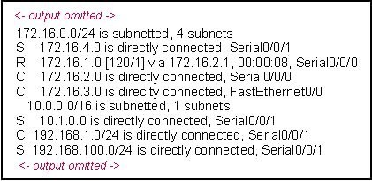 Refer to the exhibit. How many routes in this output qualify for use as ultimate routes?
- 3
- 4
- 5
- 6
- 7
- 8
07.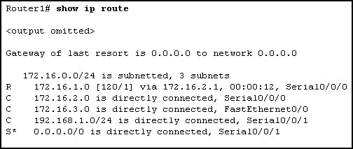 Refer to the exhibit. Router1 is running IOS version 12.2. What will the network administrator need to do so that packets for unknown child routes of 172.16.0.0/24 will not be dropped?
- issue the ip default-network command;
- use a classful routing protocol such as RIPv1;
- enable either OSPF or ISIS as the routing protocol;
- issue the ip classless command;
- do nothing, ip classless is on by default;
08.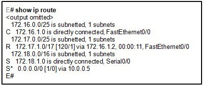 Refer to the exhibit.The graphic contains partial contents of the routing table on router E. Router E is running version 12.3 of the IOS and is configured for default routing behavior. Router E receives a packet to forward. Which route in the routing table will be searched first and why?
- 172.16.1.0/25 because it is the first ultimate route;
- 0.0.0.0/0 because it is the lowest network number;
- 172.16.0.0/25 because it is the first level 1 route;
- 172.18.0.0/16 because it has the shortest mask;
09.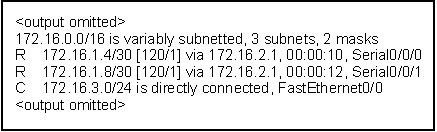 Refer to the exhibit. What protocol was used to distribute the routing information for the network 172.16.1.4?
- RIPv1
- RIPv2
- EIGRP
- OSPF
10.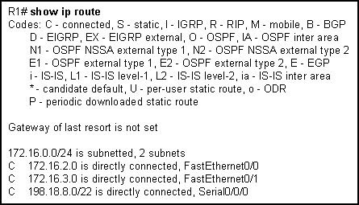 Refer to the exhibit. What subnet mask will Router1 apply to child routes of the 172.16.0.0/24 network?
- 0.0.0.0
- 255.255.0.0
- 255.255.255.0
- 255.255.255.255
11.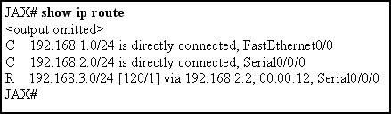 Refer to the exhibit. What can be determined from this output?
- The router will have to perform recursive lookups to forward a packet destined for 192.168.2.213/24.
- The parent route for these networks was removed from the routing table.
- A route to 192.168.0.0/25 would be classified as a supernet route for the routes listed in the routing table.
- All of the routes listed are network routes.
12. A route to a destination network is learned from multiple routing protocols. What is used by a Cisco router to select the preferred route to the destination that will be installed in the routing table?
- metric;
- route prefix;
- update timer;
- administrative distance;
13.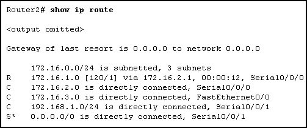 Refer to the exhibit.The network administrator has discovered that packets destined for servers on the 172.16.254.0 network are being dropped by Router2. What command should the administrator issue to ensure that these packets are sent out the gateway of last resort, Serial 0/0/1?
- ip classless;
- no ip classless;
- ip default-network 0.0.0.0;
- ip default-gateway 172.16.254.1;
- ip route 0.0.0.0 0.0.0.0 Serial 0/0/1;
14. Refer to the exhibit. Which statement correctly describes this network?
Refer to the exhibit. Which statement correctly describes this network?
- EIGRP is being used;
- There is at least one parent and one child route;
- 192.168.2.0, 192.168.3.0, and 192.168.4.0 networks are child routes;
- Traffic going to 172.16.3.0 will be directed to s 0/0/1;
15. What determines if the router implements a classless route lookup process?
- Child routes are present in the routing table.
- The command ip classless is enabled on the router.
- A classless routing protocol has been configured on the router.
- Routing table entries have a next-hop IP address and an exit interface for each child route.
16.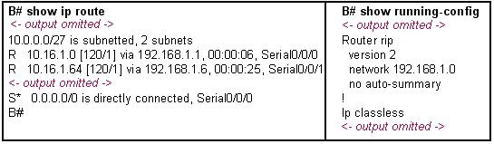 Refer to the exhibit. Router B receives a packet with a destination address of 10.16.1.97. What will router B do?
- drop the packet;
- use the default route;
- forward the packet via the route to 10.16.1.0;
- forward the packet via the route to 10.16.1.64;
17.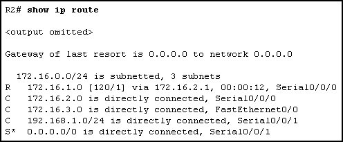 Refer to the exhibit. With the ip classless command issued, what will router R2 do with a packet destined for host 172.16.4.234?
- drop the packet;
- send packet out Serial 0/0/1;
- send packet to network 0.0.0.0;
- send packet out FastEthernet 0/0;
18.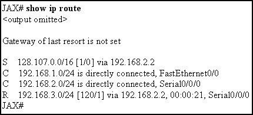 Refer to the exhibit. A packet destined for host 128.107.0.5/16 is processed by the JAX router. After finding the static route in the routing table that matches the destination network for this packet, what does the router do next?

{kind=link}
{kind=link}
{kind=link}
{kind=link}
{kind=link}
{kind=link}
{kind=link}
{kind=link}
{kind=link}
{kind=link}
{kind=link}